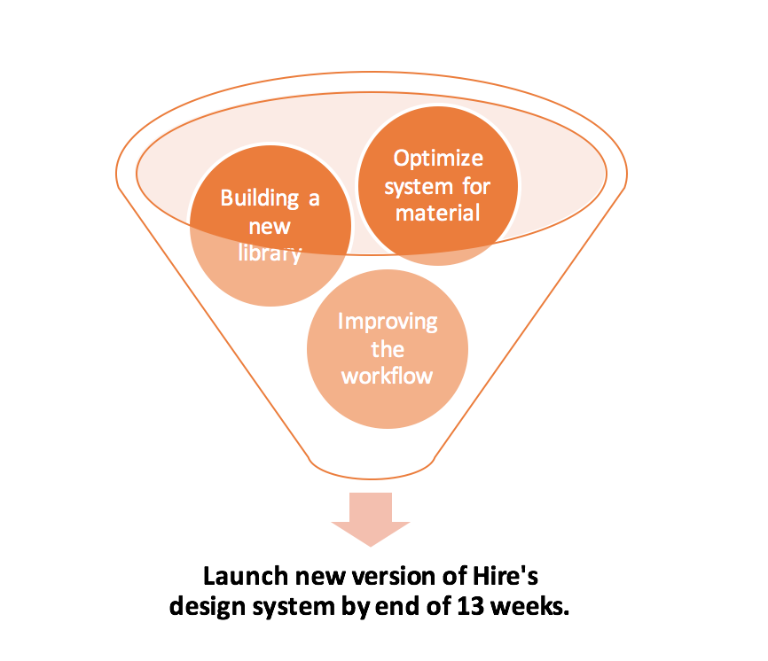
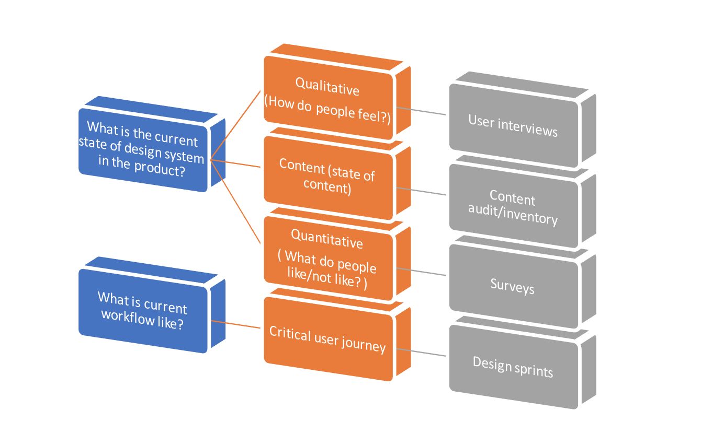
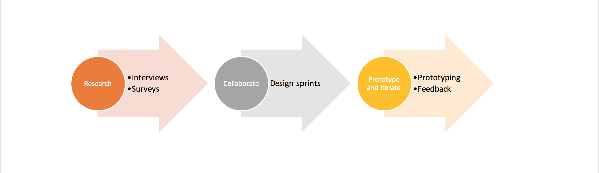
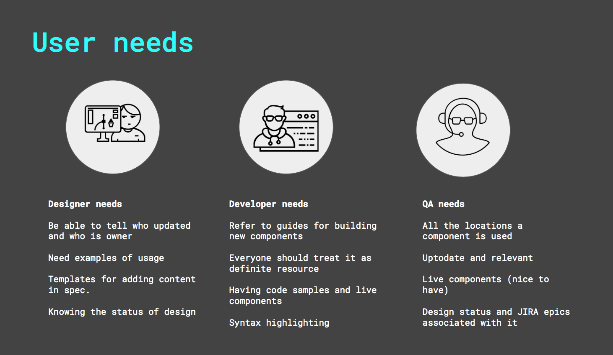
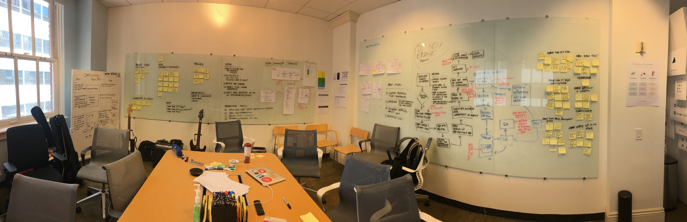
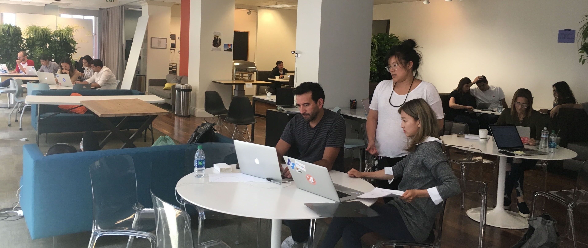

Designing Systems at Google
More than just pattern libraries.
In my summer internship at Hire, I was assigned with the task of optimizing its design system. As ambiguous and confusing it seemed initially, it was an equally daunting task. I had no idea about the product (since it was internal) and the term “design systems” seemed alien to me. Somehow, in this foggy environment, I navigated the right ways and ended up with a feasible solution.
Objectives
A lot of discussions and meetings were organized just to set the goals and objectives clear. The process of defining objectives for this project went from “Helping our team optimize and improve our design system” to “How might we improve our design system” to “How can we launch a new and sustainable version (V1) of Google Hire’s design system by the end of 13 weeks”. Fulfilling these goals not only required improvements at the system level, but also at process level.
Moreover, we also needed to set the success metrics for this project. Since I was there for a limited duration, the only way in which we could measure the success of this project was via Google HATs score. Hence, satisfaction levels ended up being one of the key metrics for this project.
Forming and norming the hypothesis
Once we were clear on the goals and expectations with the project, we (me and my mentor) started forming some key research questions that we wanted to address. Some parts were unknown and others needed to be clarified. Also, we wanted to make sure that every member of the team was clear on the expectations and outcomes for this project. After some detailed discussions we came up with few questions?
- What is the current state of design system in the product?
- What are the pain points with the current system?
- What are core user journeys of our key stakeholders?
- What we can learn from other team’s design systems?
- What is the current satisfaction level with state of the design system?
Methods
Different hypotheses required different methods. In some cases, a method was responsible for answering multiple questions. While in other cases, more than one method were required to solve a single hypothesis. Some of the methods we decided to tackle different problems were:
Flow Diagram for research questions
Some of the other methods included competitive analysis which answered the questions about what other teams inside and outside Google are doing. Design sprints were key part of the process since we had to make sure that everyone in the team was able to give their viewpoints.
Process Timeline
Process Timeline
Conducting and Synthesizing
Conducting the interviews and surveys across the internal team made me realize that the problem exists at multiple levels. In the figure below, you can see needs of different stakeholders mapped in the form of personas.
Personas of different employees
Moreover, insights from survey and competitive analysis gave us the current satisfaction we needed to measure our outcome. We also gathered content priorities in order to get a sense of what people care most in different scenarios:
- While working on a new component
- While working on existing component
- While resolving a bug
Collaborating with Design Sprints
A day after design sprint
Facilitating and leading the design sprints was perhaps most crucial and important part in the design process. It was essential to make sure that every member of the team was at same page. From very beginning of this project, we realized it would be essential for everyone to take part in the redesign of the system and workflow process. Some of the key outcomes from the design sprints were
- Listing out “How might we’s…” for our problem
- Defining design principles of the system
- Defining critical user journey’s of the system
One of the outcome of a design sprint exercise
Finding gaps and improving workflow
After analyzing the critical user journey of the designer and developer, we focussed on the potential areas in which we could make process improvements. On discussing with the team, we found that there were some gaps in the process when a designer wanted to spec out new change in the component or a pattern. Also, there was no easy entry point for contribution to the spec for both designers and developers. We modified our strategy to fill those gaps both on the process and content side.
Defining content strategy for our design system
This was where I took lead in the design process. We had to define the content hierarchy of the design system. Based on previous practices related to atomic design, I started making a interface inventory of all the possible design elements in the system. We had to map elements from both the design side and development side. I collaborated with designers and developers to refine our interface inventory. Once we had those in place, we started defining components and patterns which also led to discovery of some loopholes in the existing system.
Once I was done with that process, I had to define the template through which our key stakeholders would be able to contribute to the spec system. I created a simple prototype for contributing to the spec for both component and patterns. This prototype was refined multiple times after getting feedback from core team members.
Design Workshop
Facilitating a Design workshop
To test our prototypes and templates, we organized a design workshop. The goal of the workshop was to form a team of designers and developers and test our prototypes and templates for contributing the content in the spec. The workshop made everyone realize the importance of collaboration in this process and was carried forward in the future.
Impact
This project in its very essence was about collaboration. Some of the impacts that it had soon after my internship ended :
- Setting up of the core spec team
- Increased collaboration between designers, developers and QA.
- Increased satisfaction level.
Key Learnings
Since this was my first introduction to “Design systems”, a lot of learning and challenges were encountered throughout the process. First was getting buy-ins from lead designers and developers which made me realize how important it is to involve Leads throughout the process if you are introducing a new design system or any change in workflow. Secondly, collaboration was key throughout the process which was realized in design sprints and workshops. Also, trying to demonstrate the business case for a new design system was crucial. The whole experience made me grow as a design strategist and systems thinker.
Everything I planned and created might be modified for their own use. I might fade away based on their priorities, but what remains will be realization of power of collaboration and design systems.